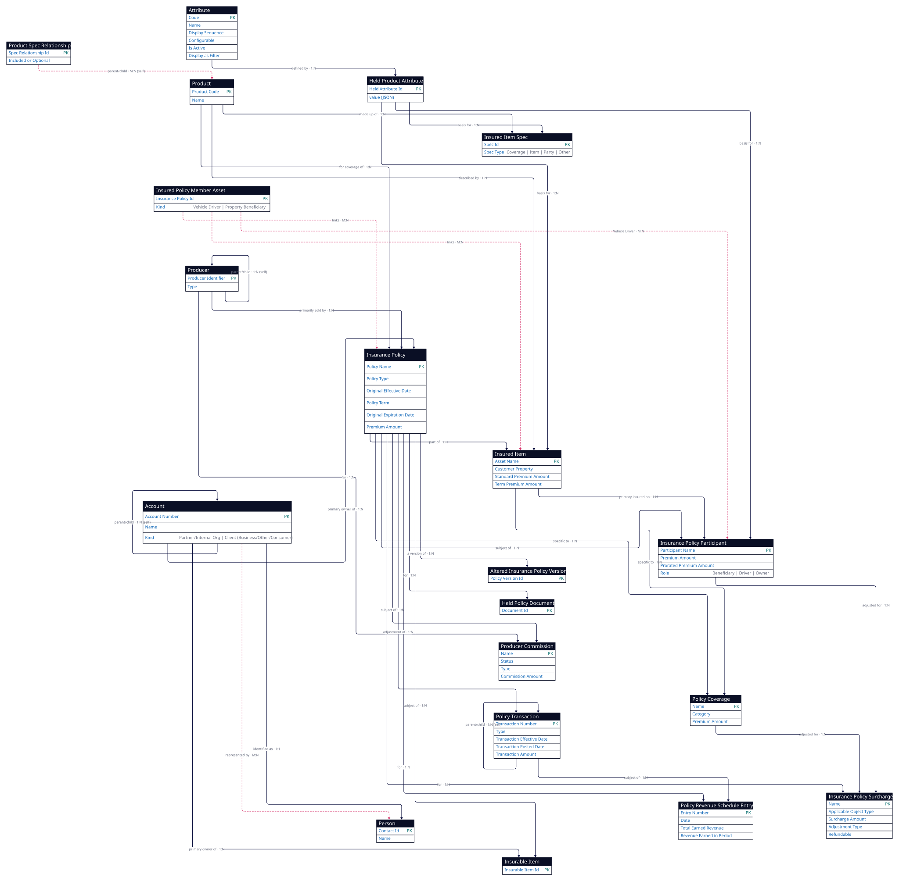

1 · Entities (20 objects)
Each entity with why it's used. The pink field is the entity's primary key.
| # | Entity | Why it's used | Key fields | Subtypes / record-types |
|---|---|---|---|---|
| 1 | Insurance Policy | The insurance contract itself — the central record everything attaches to. Holds term, type, and premium. (Commercial Lines = the commercial-auto case.) | Policy Name, Policy Type, Original Effective Date, Policy Term, Original Expiration Date, Premium Amount | Original Insurance Policy → Home, Auto, Individual Life, Individual Annuity, Commercial Lines, Non-Held Product, Other Policy |
| 2 | Altered Insurance Policy Version | A prior / amended version of a policy, so you can reconstruct what it looked like at a point in time. | Policy Version Id | a version of / baseline version of a policy |
| 3 | Insured Item | The thing being insured (the vehicle / asset). Lets you attribute premium and loss to a specific item. | Asset Name, Customer Property, Standard Premium Amount, Term Premium Amount | the insured asset (vehicle / property as data) |
| 4 | Policy Coverage | A specific protection on the policy (liability, collision…) with its limits and premium; defines what is and isn't covered. | Name, Category, Premium Amount | — |
| 5 | Insurance Policy Participant | A party's role on the policy (owner, driver, beneficiary) and their share of premium. | Participant Name, Premium Amount, Prorated Premium Amount | Roles → Beneficiary Role, Driver Role, Owner Role |
| 6 | Insured Policy Member Asset | Links a participant to an insured item — e.g. which driver is tied to which vehicle. | Insurance Policy Id | Vehicle Driver, Property Beneficiary |
| 7 | Insurance Policy Surcharge | An extra charge applied to the policy / coverage / participant (e.g. a risk surcharge); part of pricing. | Name, Applicable Object Type, Surcharge Amount, Adjustment Type, Refundable | — |
| 8 | Producer Commission | The commission paid to the producer / broker for selling the policy. | Name, Status, Type, Commission Amount | — |
| 9 | Policy Transaction | A change event on the policy over time (endorsement, renewal, cancellation) with its premium impact — the lifecycle timeline. | Transaction Number, Type, TransactionEffectiveDate, TransactionPostedDate, TransactionAmount | self parent / child |
| 10 | Policy Revenue Schedule Entry | How premium is earned across the term; the basis for earned-premium and loss-ratio. | Entry Number, Date, Total Earned Revenue, Revenue Earned in Period | — |
| 11 | Product | The product the policy is built from; carries the rating and coverage specs. | Product Code, Name | Specs → Coverage Spec, Insured Item Spec, Insured Party Spec, Other Spec |
| 12 | Product Spec Relationship | Links a product to its child products / specs (the product hierarchy — what a product includes). | Spec Relationship Id, Included or Optional | product hierarchy junction |
| 13 | Held Product Attribute | Flexible product / policy attribute values stored as JSON — configurable fields without schema changes. | Held Attribute Id, value (JSON) | — |
| 14 | Attribute | The definition / metadata of a configurable attribute (its code, name, whether it's active or filterable). | Code, Display Sequence, Configurable?, Name, Is Active?, Display as Filter? | — |
| 15 | Held Policy Document | The source document(s) behind the policy (binder, endorsement, inspection) — provenance. | Document Id | — |
| 16 | Producer | The agent / broker / agency that sold the policy. | Producer Identifier, Type | self parent / child |
| 17 | Insurable Item | A customer's property that may need coverage (pre-policy), so quotes can be generated quickly. | Insurable Item Id | customer property that may be insured |
| 18 | Account | The customer that owns the policy — the fleet company (or a person). | Account Number, Name | Partner (Internal Org) Account → Carrier / Writing Company; Client → Business / Other / Consumer Client |
| 19 | Person | An individual contact — driver, owner contact, or underwriter. | Contact Id, name | Partner/Captive/Underwriter → User or Partner User, Non-User Producer; Client or Other Person |
| 20 | Insured Item Spec set | Product-side specs: what coverages and items a product offers — the template a policy instances. | Spec Id, Spec Type (Coverage / Item / Party / Other) | product-side coverage & item specifications |
2 · Relationships (31 relationships)
A 1:N B = one A, many B (master-detail child→parent is the “many” side). The Relationship column is the verb (the named edge): read it as From · relationship · To. M:N rows (pink) are junction objects.
| # | From | Relationship | Card. | To | What it means (plain English) |
|---|---|---|---|---|---|
| 1 | Insurance Policy | part of | 1:N | Insured Item | a policy covers many insured items (e.g. one fleet policy covers 38 trucks). |
| 2 | Insurance Policy | specific to | 1:N | Policy Coverage | a policy carries several coverages (liability, collision, comprehensive). |
| 3 | Insured Item | specific to | 1:N | Policy Coverage | a coverage is attached to a specific item (e.g. collision cover on truck #12). |
| 4 | Insurance Policy | subject of | 1:N | Insurance Policy Participant | a policy has many participants (owner, drivers, beneficiaries). |
| 5 | Insured Item | primary insured on | 1:N | Insurance Policy Participant | ties a participant to the item they’re insured on (e.g. the driver of a truck). |
| 6 | Insurance Policy | for | 1:N | Insurance Policy Surcharge | a policy can carry surcharges (e.g. a high-risk-corridor surcharge). |
| 7 | Policy Coverage | adjusted for | 1:N | Insurance Policy Surcharge | a surcharge can apply to one specific coverage. |
| 8 | Insurance Policy Participant | adjusted for | 1:N | Insurance Policy Surcharge | a surcharge can apply to one participant (e.g. a young-driver surcharge). |
| 9 | Producer | for | 1:N | Producer Commission | a producer earns commission on the policies they sell. |
| 10 | Insurance Policy | subject of | 1:N | Producer Commission | each policy generates its commission record(s). |
| 11 | Insurance Policy | adjustment of | 1:N | Policy Transaction | a policy accumulates transactions over time (endorsements, renewals, cancellations). |
| 12 | Policy Transaction | parent of / child of | 1:N (self) | Policy Transaction | a transaction can amend or reverse an earlier one. |
| 13 | Insurance Policy | for | 1:N | Policy Revenue Schedule Entry | premium is earned in scheduled pieces across the term. |
| 14 | Policy Transaction | subject of | 1:N | Policy Revenue Schedule Entry | each transaction produces its own earned-revenue schedule. |
| 15 | Insurance Policy | for | 1:N | Held Policy Document | a policy has source documents (binder, endorsements, inspection report). |
| 16 | Insured Policy Member Asset | Vehicle Driver (links) | M:N | Insurance Policy ↔ Insured Item ↔ Participant | links a driver to the vehicle they drive (e.g. Conductor A ↔ truck #12). |
| 17 | Product | for coverage of | 1:N | Insurance Policy | many policies are issued from one product (e.g. the “Commercial Auto Fleet” product). |
| 18 | Product | described by | 1:N | Insured Item | an item is described by the product spec it was rated under. |
| 19 | Product | made up of | 1:N | Insured Item Spec (Coverage / Item / Party / Other) | a product is built from its coverage / item / party specs (what it offers). |
| 20 | Product Spec Relationship | parent of / child of | M:N (self) | Product ↔ Product | links a product to its child products (e.g. a fleet product bundling sub-coverages). |
| 21 | Attribute | defined by | 1:N | Held Product Attribute | one attribute definition is reused to store many attribute values. |
| 22 | Held Product Attribute | basis for | 1:N | Insured Item / Participant / Spec | an attribute value configures an item / participant (e.g. “garaging postcode = 110001”). |
| 23 | Producer | primarily sold by | 1:N | Insurance Policy | a producer sells many policies. |
| 24 | Producer | parent of / child of | 1:N (self) | Producer | producers form a hierarchy (agency → sub-agent). |
| 25 | Account | primary owner of | 1:N | Insurance Policy | a customer owns many policies (e.g. the fleet holds its commercial-auto policy). |
| 26 | Account | primary owner of | 1:N | Insurable Item | a customer owns items not yet on a policy (quote-ready). |
| 27 | Insurance Policy | subject of | 1:N | Insurable Item | an insurable item can become the subject of a policy. |
| 28 | Account | parent of / child of | 1:N (self) | Account | accounts form a hierarchy (parent company → subsidiary). |
| 29 | Account | represented by | M:N | Person (Contact) | an account is linked to its people (billing contact, signer). |
| 30 | Insurance Policy | a version of | 1:N | Altered Insurance Policy Version | a policy keeps historical versions (what it looked like before each change). |
| 31 | Client (Account) | identified as | 1:1 | Person (Contact) | a consumer / sole-proprietor account is the same as one person. |
Validation notes
- 1:N relationships are FSC master-detail / lookup — the child carries the foreign key; the “subject of” label marks the child→parent direction.
- M:N (pink rows): 3 junctions — Insured Policy Member Asset (#16, the “Vehicle Driver” link), Product Spec Relationship (#20, product hierarchy), and Account↔Contact (#29).
- A few dense connectors (Surcharge #7/#8, “basis for” target #22) are read from the ERD image; the field-level source of truth is Salesforce’s public FSC Object Reference (e.g.
InsurancePolicyParticipant.PrimaryInsuredId → InsurancePolicyAsset).
Source: Salesforce “Policy Management with FSC Insurance” ERD (March 2021), faithful extraction. Faithful source model — Qubru mapping is a separate step.
3 · Diagram (rendered from D2 — 20 entities · 31 relationships)
Code-based diagram (D2) of the exact same model in the tables above. Source: 2026-06-14-policy-management.d2 · pink-dashed = M:N junction objects. Insurance Policy is the hub.
